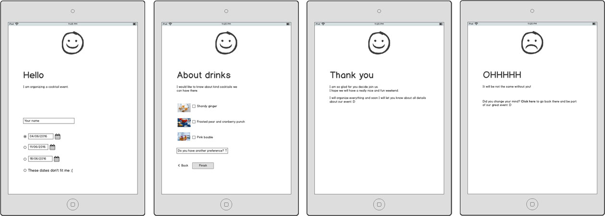
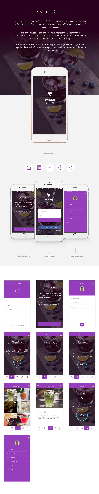

Event Case
The Miami Cocktail Challenge
It’s going be another hot weekend in Miami and we would like to organize a get-together with our friends to drink cocktails. We have a lot of friends with different schedules and varying tastes in bars.
Job
Design a solution for the Miami Cocktail Event.
Solution
In the early stages of this project I have approached 5 users that are representative of the target users, and I have invited them for an interview to understand their habits and taste in drinking.
Through the data collection it has been possible to gain some insights that helped to develop lo-fi paper prototypes that have been tested with the same group of users.
I've used prototype paper to test with the users. It's very good to validate the ideas.
 Picture of the wall I created for prototype and workflow.
Picture of the wall I created for prototype and workflow.Wireframes
After validate the ideas with users, I start doing wireframe and it was quick and easy solution for user flows.
UI Design
Here is the final high-fi mockukp.
- Client: Miami Cocktail
- Date: April 2016